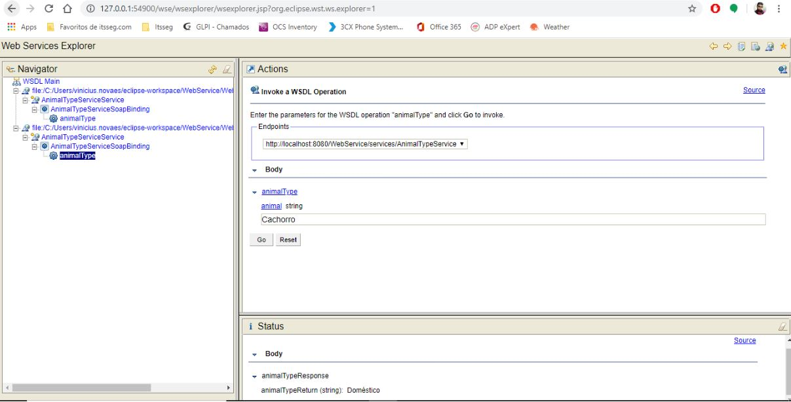
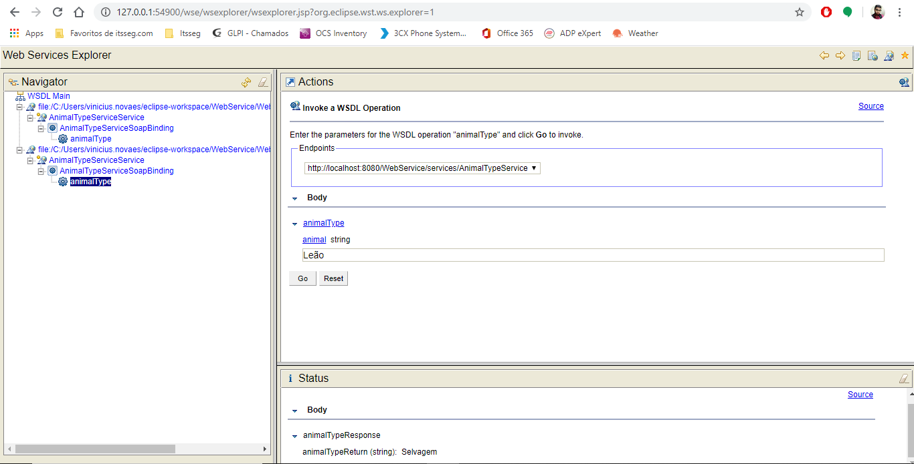
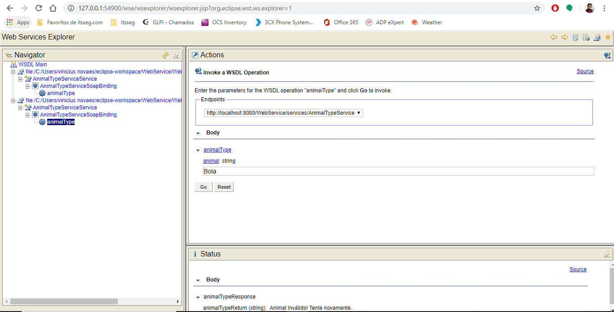

|
[HTTP] |
[WSDL] |
[Exemplo] |
|
|
| Exemplo de Web Service No exemplo abaixo, foi realizado um web service que identifica se um animal é doméstico ou selvagem, o mesmo faz a validação e as telas que se sucedem são: Doméstico como verdadeiro  Selvagem como verdadeiro  Animal Inválido  |
Vinicius Novaes - 1923120396 / Web Services pra Mobile